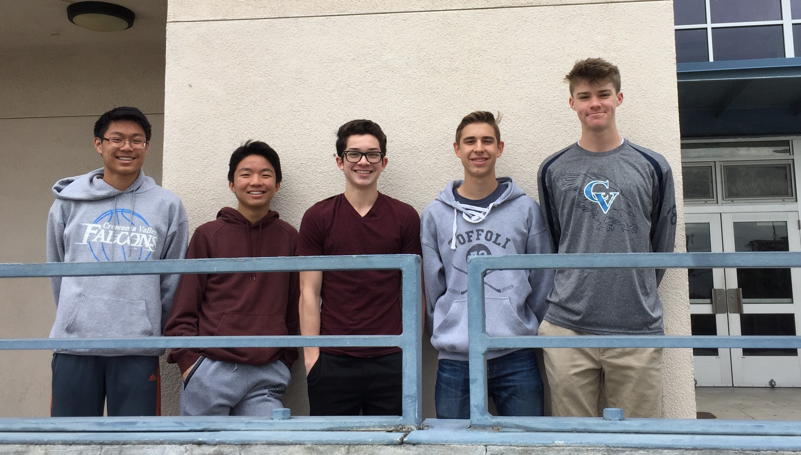

Who are we?
We are a group of students from Crescenta Valley High School in La Crescenta, California.
- Keegan Schmit
Founder and President

What is our goal?
We aim to run a successful organization that improves a hospital's atmosphere for young patients.
Who are our members?
Our members include President and Head of Technology Keegan Schmit, Vice president Andrew Boyle, Treasurer Abel Lai, Publicist Solomon Kim, and Head of Communication and Outreach Tyler Carlson.
When and where were we founded?
Hospital Heroes was founded in La Crescenta, California in 2016.
How can you make a difference?
You can make a difference by signing up on our "Volunteer" page, or by donating money on our "Donate" page. Any donation of any size is appreciated.
Who do we help, and how can you see about scheduling a visit for your child?
We help exclusively youth patients, and mainly long-term or terminal ones, but there are exceptions. You may visit our "Refer a child" page to request a visit for your child.
How can you get a hold of us?
You can find all our contact information on the "Contact" page.
Just hospital visits?
No, we also organize blood drives in the La Crescenta area and fundraise for "fun carts"